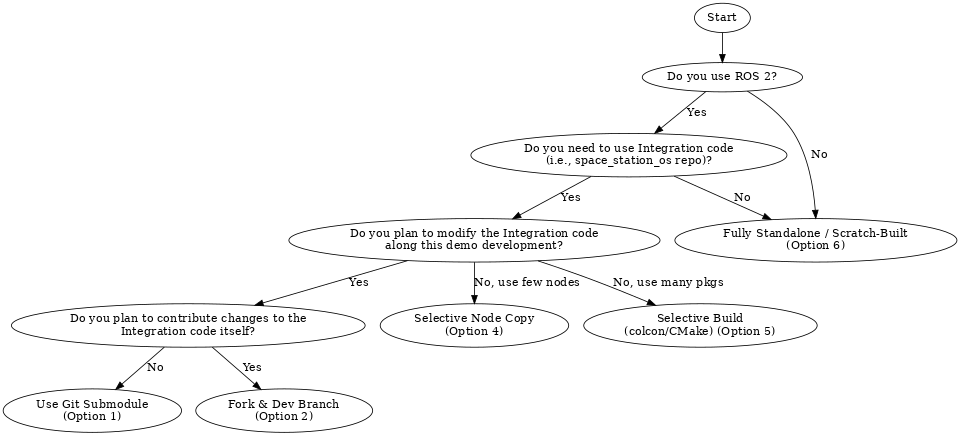

Demo¶
This document describes different strategies for developing demonstration packages using or extending the core space_station_os integration repository.
Example¶
Typical Use Cases¶
Modify integration (
space_station_os) while developing your own test scenariosBuild from scratch with reference to SSOS interfaces
Prepare for future pull requests to the main repo
Six recommended approaches for¶
We encourage contributors to begin with unit-level development using a demo repository before attempting integration into the main space_station_os repository. To support this, we propose six typical approaches for demo development. Each option reflects a different level of integration and customization, allowing developers to choose the path that best suits their needs.
Demo Selection Flowchart¶
The Demo Selection Flowchart below can help guide this decision-making process.

README.md templates¶
Each case links to a corresponding README.md template that can be used as a starting point for your own demo repository.
For upstream contribution: consider using Option 1 or 2
For isolated testing: use Option 3 or 4 (recommended for users new to ROS 2)
For structured partial builds: use Option 5
For conceptual freedom: use Option 6 (suitable even for non-ROS 2 users)